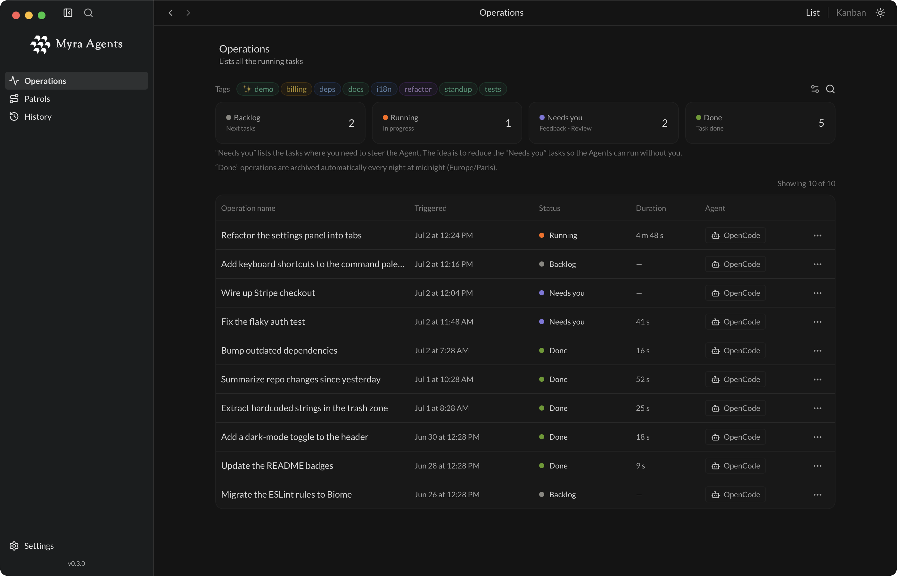
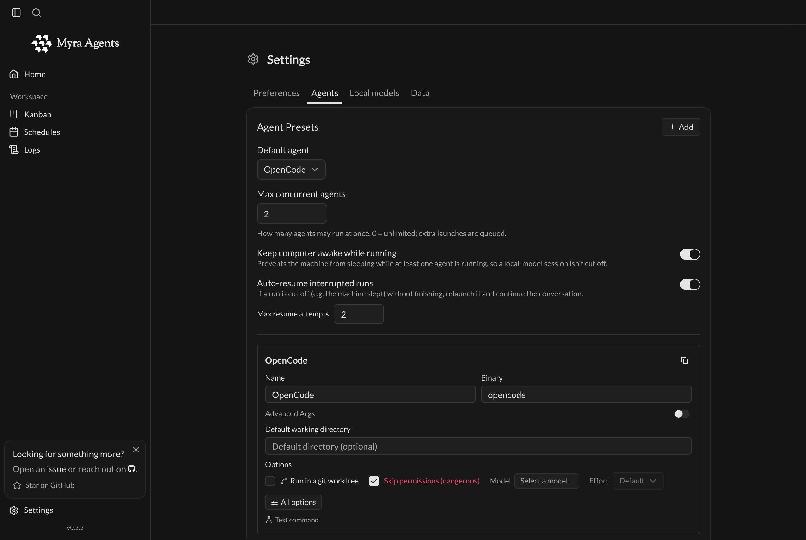
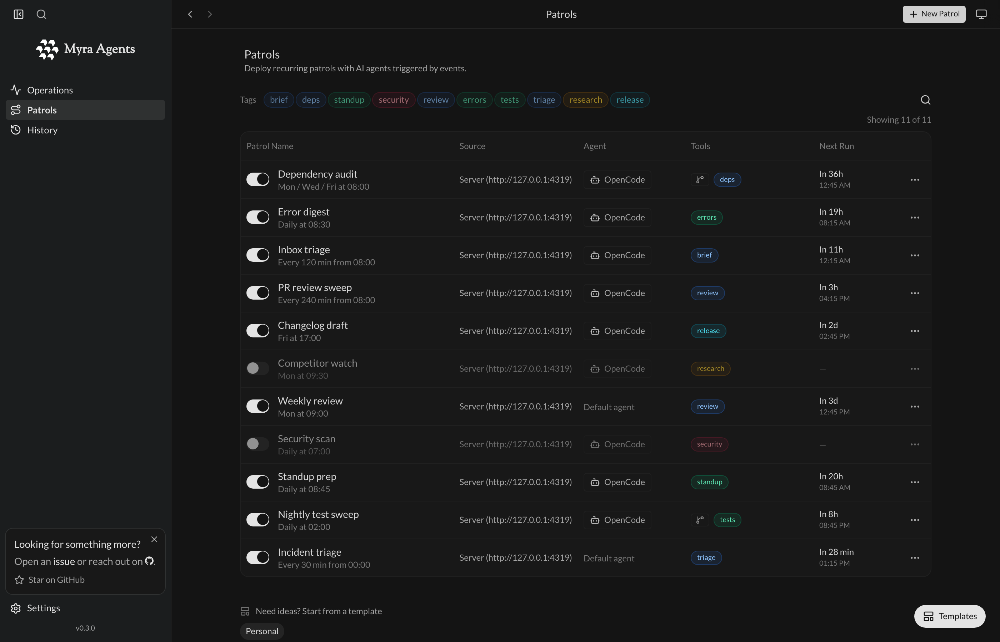
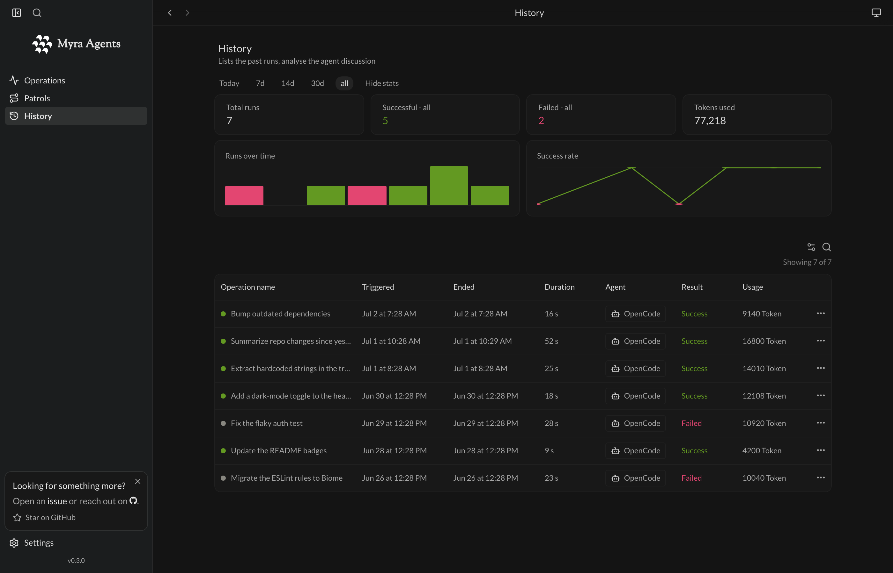
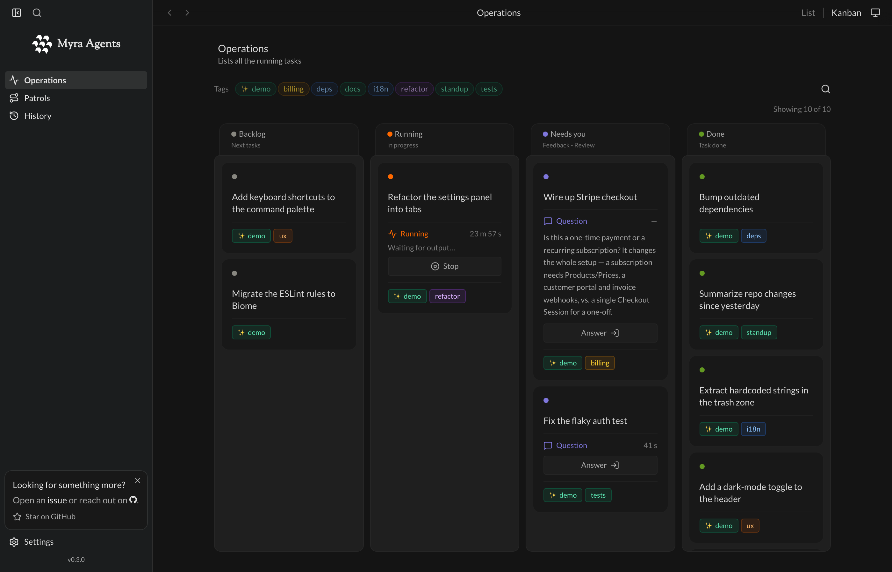

Free everyone from repetitive work
Delegate the repetitive work you'd rather not do.
Set up your agents once — they run on their own, on schedule, even while you sleep.

Set them up once. They run on their own — in parallel, on schedule, reporting back as they go.
List or Kanban — see every operation at a glance. They move themselves: Backlog → Running → Needs you → Done, driven by what the agent reports.
Agent- and LLM-agnostic by design. Today OpenCode is the built-in harness — detected and installed for you in one click — and Ollama runs local models. Any other CLI agent works too: point a custom preset at a binary, an args template with a {prompt} placeholder, and a working directory. No lock-in.
Output streams onto the operation as it happens. History keeps every past run with its result, duration and — when the agent reports them — token and cost stats.
Set how many agents may run at once (0 = unlimited). Extra launches are queued and start as others finish.
Deploy patrols that run once, daily, weekly, on an interval, or by cron. Myra keeps working in the background from the system tray, even while you sleep.
Everything runs locally on your own machine. No account, no sign-up — your API keys and your code never leave your device.
Also: English + French UI.



Set up your agents, deploy patrols, watch operations move themselves to Done — every past run measured in History.
OpenCode works out of the box — detected and installed in one click. Bring any other CLI agent through a custom preset, or run local models with Ollama. Myra spawns it headless and streams its output live onto the operation.
Put your agents on patrol — once, daily, weekly, on an interval, or by cron. Each patrol carries a prompt, an agent and a working directory, and fires on its own; no babysitting required.
Every run lands as an operation — List or Kanban. They advance on their own as agents report: Backlog → Running → Needs you → Done. Step in only when one needs you.

History keeps the stats of every past operation — runs over time, success rate, duration and token usage — so you can see what your workforce got done and what it cost.
Recurring chores you'd rather not do by hand — set once, then they just run.
Summarize the last 24h — merged PRs, fixes, risky changes — and post it to Slack before standup.
cron: "0 8 * * 1-5"
Scan for outdated or vulnerable packages, bump them, run the tests, and open a PR — while you sleep.
cron: "0 3 * * *"
Cluster new Sentry errors, find the root cause, and land a safe fix or post the analysis.
cron: "*/30 * * * *"
A few capabilities are parked while we polish them, and more are on the way. Today Myra runs fully local on your own machine — everything below is planned or in exploration, opt-in and never at the cost of local-first.
Check your operations and kick off runs from your phone or any browser, while the agents keep running on the machine back home.
An optional hosted relay keeps your devices in sync without self-hosting. Opt-in only — your local-first setup stays exactly as it is.
Fire Slack messages and webhooks as operations reach Needs you or Done. Temporarily parked while we rework it.
Describe your goals in plain language and let Myra turn them into a set of scheduled operations. Coming back after a redesign.
Browse, enable, and configure runtime plugins right from Settings — the open agent ecosystem, one click away.
Bring your team into the workspace, assign operations, and see who's running what — for when one colony of agents isn't enough.
Want to shape what ships next? Open an issue on GitHub.
It clones every repo and wires the workspace together for you.
curl -fsSL https://raw.githubusercontent.com/Myra-Agents/Myra-Agents-Dev/develop/install.sh | bash
Prereqs: bun, Rust toolchain + Tauri v2 prerequisites. Open-source contributors get a working app without private access.
v0.3.0 · see all releases. Prefer to build it yourself? Use the command above.